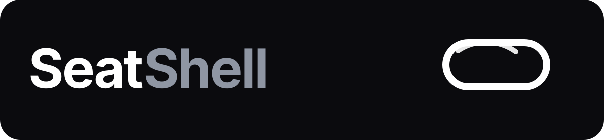

Brand identity
Hoe SeatShell eruit kan zien
Hier staat de merkbasis: logo’s, kleuren en toon. Dit is handig voor je site, pitch, socials en eventuele verpakking.
Main logo

Wordmark
Kleuren
Base black
#060607
Soft black
#0B0B0E
Steel grey
#8F96A3
Toon
Kort, direct en praktisch. Geen overdreven marketingtaal.
Merkgevoel
Rustig, functioneel en modern. Meer product dan gimmick.
Gebruik
Geschikt voor website, pitchdeck, socials en productpagina’s.